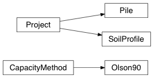

Module Documentation¶
This section provides the complete API reference for edafos, auto-generated
from the docstrings in the project source code.
Inheritance Diagram
edafos.project¶
Provide the Project class.
As of this writing (v.0.1.0) Project classes will be required for all
actions.
-
class
Project(unit_system, **kwargs)[source]¶ Bases:
objectClass to represent a new project.
-
__init__(unit_system, **kwargs)[source]¶ Parameters: unit_system (str) – The unit system for the project. Can only be ‘English’, or ‘SI’.
Keyword Arguments: - project_id (int) – The unique id for the project. If one is not provided, a random 8-digit number will be assigned.
- project_name (str) – The project name. If none is entered it defaults to “New Project”.
- date (timestamp) – The date and time of the analysis. If it is not provided, the current time when the object was instantiated is stored.
-
attach_pile(obj)[source]¶ Method that attaches a
Pileobject to theProjectobject. TheProjectclass supports adding onePileobject. If you run theattach_pilemore than once, it will replace the previousPileobject.Parameters: obj (class) – A Pileclass.Returns: self
-
attach_sp(obj)[source]¶ Method that attaches a
SoilProfileobject to theProjectobject. TheProjectclass supports adding oneSoilProfileobject. If you run theattach_spmore than once, it will replace the previousSoilProfileobject.Parameters: obj (class) – A SoilProfileclass.Returns: self
-
set_units(dim)[source]¶ A private helper method that returns the Pint units to be attached to a variable based on the set unit system and dimensionality (dim). Since this is a private method, the stored values will not be shown in the docstring. Refer to the unit_dict in the code.
Parameters: dim (str) – The dimensionality for the variable. For example, layer height is ‘length’. Returns: Pint units.
-
edafos.soil.profile¶
Provide the SoilProfile class.
-
class
SoilProfile(unit_system, water_table)[source]¶ Bases:
edafos.project.ProjectClass to represent a new soil profile.
Warning
Pay attention to the base units for each unit system that you choose to use. Refer to the parameter definition below or the Input Units page.
-
__init__(unit_system, water_table)[source]¶ Parameters: - water_table (float) –
Depth to water table measured from ground elevation.
- For SI: Enter value in meters.
- For English: Enter value in feet.
- unit_system (str) – The unit system for the project. Can only be
‘English’, or ‘SI’. Properties inherited from the
Projectclass.
- water_table (float) –
-
_create_profile()[source]¶ A private method that instantiates the soil profile data frame.
Returns: An empty Pandas DataFrame with two headers, one for the column names and another for the column units.
-
add_layer(soil_type, height, **kwargs)[source]¶ Method to add a new layer to the soil profile.
Todo
Run parameter checks for allowable ranges and required info, for example, raise a warning for a cohesionless layer without shear strength.
Parameters: - soil_type (str) – Allowed values are ‘cohesive’ for clays and ‘cohesionless’ for sands.
- height (float) –
Height of soil layer.
- For SI: Enter height in meters.
- For English: Enter height in feet.
Keyword Arguments: - soil_desc (str) – Soil description. Initially created to accommodate
the Olson 90 Method. As such, in order to follow the
guidelines in Table 12, the only valid inputs
are:
gravel,sand-gravel,sand,sand-silt,silt. TODO: There is no check to reject these inputs forsoil_type = 'cohesive', although they have no effect. - tuw (float) –
Total unit weight of soil.
- For SI: Enter TUW in kN/m3.
- For English: Enter TUW in lbf/ft3.
- field_n (int) – Field SPT-N values.
- corr_n (int) –
Corrected Field SPT-N values.
Note
If field SPT-N value is given without the corrected SPT-N, the corrected value will be automatically calculated.
- field_phi (float) – Field internal angle of friction, φ, in degrees.
- calc_phi (float) – Calculated internal angle of friction, φ, from SPT-N values.
- su (float) –
Undrained shear strength, su.
- For SI: Enter su in kN/m2.
- For English: Enter su in kip/ft2.
-
calculate_stress(z, kind='effective')[source]¶ Method to calculate stresses (pore water, total, effective). It defaults to ‘effective’. Change the
kindparameter to get the other stresses.Parameters: - z (float) –
Vertical depth to the point of interest, measured from the top of the soil profile.
- For SI: Enter depth, z, in meters.
- For English: Enter depth, z, in feet.
- kind (str) – Parameter that controls the output of the function.
Allowed values are
total,pore_water,effectiveandall. The last value,all, returns all three stresses in the same order.
Returns: A physical quantity with associated units.
- For SI: Stress is returned in, kN/m2.
- For English: Stress is returned in, kip/ft2.
Return type: Quantity
- z (float) –
-
get_soil_prop(z, sp)[source]¶ This method will return the soil property (with units), i.e. SPT-N, total unit weight, undrained shear strength, etc. at depth, \(z\). The soil properties must have been previously defined with the
add_layer()method.TODO: This method will be updated to locate more granular data prior to layer delineation, if available.
Parameters: - z (float) –
Vertical depth to the point of interest, measured from the top of the soil profile.
- For SI: Enter depth, z, in meters.
- For English: Enter depth, z, in feet.
- sp (str) – Available inputs exactly as defined in the keyword
arguments of
add_layer().
Returns: Soil property with units.
Return type: Quantity
- z (float) –
-
z_of_layers(loc='bot')[source]¶ Method that returns a list of depths, \(z\), for the defined soil profile layers. The depths selected are at the layer interface and at layer midpoint. The method returns a list with either or all points based on the input of the
locargument. This list can be used for effective stress calculations.Parameters: loc (str) – Controls the selection of points. Available options are bot(for bottom of layer),mid(for layer midpoint) orall.Returns: A list of depths, \(z\) (unitless). Return type: list
-
edafos.deepfoundations.piles¶
Provide the Pile class.
-
class
Pile(unit_system, pile_type, **kwargs)[source]¶ Bases:
edafos.project.ProjectClass to represent a new driven or drilled pile.
Warning
Pay attention to the input units for each unit system that you choose to use. Refer to the parameter definition below or the Input Units page.
-
__init__(unit_system, pile_type, **kwargs)[source]¶ Parameters: - unit_system (str) – The unit system for the project. Can only be
‘English’, or ‘SI’. Properties inherited from the
Projectclass. - pile_type (str) –
Type of driven pile. Available options are:
concrete: A rectangular (normally square) concrete pile. Requires different keyword arguments depending onshape. Always requireslength.pipe_open: An open-ended circular steel pipe pile. Requires keyword argumentsdiameter,thickness,length.pipe_closed: A closed-ended circular steel pipe pile. Requires keyword argumentdiameter,length.h_pile: An H shape steel beam used as a pile. Requires keyword argumentshape,length.timber: A circular timber pile. Requires keyword argumentdiameter,length.cast-in-place: A concrete cast-in-place pile. Requires keyword argumentdiameter,length.
Keyword Arguments: - shape (str) – Pile shape given pile type. For concrete piles the
options are
square-solid,square-hollow,circle-closed,circle-open,hexagonandoctagon. For H-piles, see Table 6 for stored sections. - side (float) –
\(\alpha\): Side length of square, hexagonal and octagonal piles, at the top.
- For SI: Enter side length in centimeters.
- For English: Enter side length in inches.
- diameter (float) –
\(d\): Outer diameter at the top for circular piles and inner diameter of concrete square hollow piles.
- For SI: Enter diameter in centimeters.
- For English: Enter diameter in inches.
- thickness (float) –
\(t\): Wall thickness of steel pipe piles and concrete circular open-ended piles.
- For SI: Enter thickness in centimeters.
- For English: Enter thickness in inches.
- length (float) –
\(L_t\): Total length of pile.
- For SI: Enter length in meters.
- For English: Enter length in feet.
- pen_depth (float) –
\(D_p\): Penetration depth, the part of the pile that is embedded in the ground. Important: if a penetration depth is not entered, it will be assumed equal to the total length of the pile.
- For SI: Enter depth in meters.
- For English: Enter depth in feet.
- nf_zone (float) –
\(D_{nf}\): No-friction zone; this is the length of a segment measured from ground level where frictional resistance does not contribute to pile capacity.
- For SI: Enter depth in meters.
- For English: Enter depth in feet.
- taper_dims (list of lists) –
[\(d_i,l_i\)]: For tapered piles, enter the width of the pile, \(d_i\), at a length, \(l_i\), measured from the top of the pile. The program allows for multiple tapered sections. Enter as a list, for example: [[12,4], [10,4],]
- For SI: Enter width in centimeters and length in meters.
- For English: Enter width in inches and length in feet.
- unit_system (str) – The unit system for the project. Can only be
‘English’, or ‘SI’. Properties inherited from the
-
_pile_a_d(z)[source]¶ A private method that returns the side, \(a\), or diameter, \(d\), of a pile at a depth \(z\).
Parameters: z (float) – Vertical depth to the point of interest, measured from the top of the soil profile.
- For SI: Enter depth, z, in meters.
- For English: Enter depth, z, in feet.
Returns: Side \(a\), or diameter, \(d\). Return type: Quantity
-
static
area_of_shape(ad, shape, t=None, ad2=None, h=None)[source]¶ Static method that calculates the area of a given shape.
Parameters: - ad (float) – Length of side or diameter.
- shape (str) – Options are
square,hexagon,octagon,circle,ring,trapezoid,cone. - t (float) – Thickness of pile wall.
- ad2 (float) – Additional length of side or diameter to obtain side area.
- h (float) – Segment height to obtain side area.
Returns: Area of shape (unitless)
Return type: float
-
side_area(z1, z2, box_area=False, inside=False)[source]¶ Method that returns the side area for a section of the pile defined by z1 and z2.
Parameters: - z1 (float) –
Vertical depth to the highest point of interest, measured from the top of the soil profile.
- For SI: Enter depth, z1, in meters.
- For English: Enter depth, z1, in feet.
- z2 (float) –
Vertical depth to the lowest point of interest, measured from the top of the soil profile.
- For SI: Enter depth, z1, in meters.
- For English: Enter depth, z1, in feet.
- box_area (bool) – For H-piles, if set to
TRUE, the method returns the box area. - inside (bool) – For open steel pipe piles only. If TRUE, it returns the inside area of the pile for plugged calculations.
Returns: The side area of the pile w/ units between z1 and z2.
Return type: Quantity
- z1 (float) –
-
xsection_area(z, soil_plug=False, box_area=False)[source]¶ Method that returns the pile cross sectional area at a depth, \(z\), from ground surface.
Warning
This method was made for bearing capacity calculations. As such, it returns the relevant cross sectional area. For example, for steel pipe closed-ended piles, it will return the circle and not the ring area.
TODO: For concrete square hollow piles it currently returns solid area
Parameters: - z (float) –
Vertical depth to the point of interest, measured from the top of the soil profile.
- For SI: Enter depth, z, in meters.
- For English: Enter depth, z, in feet.
- soil_plug (bool) – If
TRUE, the method returns the full area of open-ended piles. - box_area (bool) – For H-piles, if set to
TRUE, the method returns the box area.
Returns: The cross sectional area of the pile w/ units.
Return type: Quantity
- z (float) –
-
z_of_pile()[source]¶ Method that returns a list of depths, \(z\), for the pile that correspond to the top of the pile (if below ground), the tip of the pile and inflection points if tapered.
The assumption here is that \(z = x - L_t + D_p\), where \(x\) is a point along the length of the pile. Therefore, for \(x = 0\) we get the depth \(z_{pile.top}\) at the top of the pile (if \(D_p > L_t\)) and for \(x = L_t\), we get the depth \(z_{pile.toe}\) at the toe (aka tip) of the pile. If the pile is tapered, \(x\) along inflection points will produce the corresponding \(z\).
Returns: A list of depths, \(z\) (unitless).
-
edafos.deepfoundations.capacity_base¶
Provide the CapacityMethod class.
-
class
CapacityMethod(project)[source]¶ Bases:
objectClass to represent the base methods shared by all Capacity Methods. It is not anticipated that users will interact with this class.
-
__init__(project)[source]¶ Parameters: project (class) – Provide the Projectobject as defined in theProjectclass.
-
_pre_check(req)[source]¶ Private method that goes through all defined soil and pile properties and compares against the requested properties to ensure they are available.
Pile objects cannot be created without the required properties, hence, at the moment this method focuses mostly on soil properties.
Parameters: req (list) – A list of required properties by their corresponding argument names (i.e. [soil_type, tuw, corr_n]).Returns: pass/fail (TODO- with recommendations for missing properties)
-
_z_for_analysis()[source]¶ Private method that expands the
z_layer_pile()list to produce smaller intervals that the analysis will run on. These intervals are:- For SI: 0.2 meters
- For English: 0.5 feet
Returns: - Two lists of depths, \(z\) (unitless). The first list is
- at the bottom, the second list is at mid point for average effective stress calculations.
Return type: list
-
static
a_factor_rev_api(sigma, su)[source]¶ Method that calculates the \(\alpha\) factor for cohesionless soils, as per equation (3).
Parameters: - sigma (float) – average effective stress
- su (float) – undrained shear strength of soil
Returns: The \(\alpha\) factor
Return type: float or dimensionless Quantity
-
average_toe_su()[source]¶ API RP2A guidelines, as also shown in equation (5), recommend that for bearing capacity calculations, the undrained shear strength, \(s_u\), should be taken as the average over a distance of two pile diameters below the tip of the pile. This method calculates this average if there is available information.
Returns: Average Return type: Quantity
-
static
lateral_k_olson90(corr_n, full_displ)[source]¶ Method that returns the value of coefficient of lateral earth, \(K\), as per Olson 90 and equation (8).
Parameters: - corr_n (int) – SPT-N corrected value, \(K_{cor}\).
- full_displ (bool) – Pile condition (open-ended piles:
False, full-displacement piles:True).
Returns: Value of coefficient of lateral earth, \(K\), as per Olson 90.
Return type: float
-
static
lateral_k_rev_api(full_displ)[source]¶ Method that returns the value of coefficient of lateral earth, \(K\), as per the Revised API guidelines in Table 7.
Parameters: full_displ (bool) – Pile condition (open-ended piles: False, full-displacement piles:True).Returns: Value of coefficient of lateral earth, \(K\), as per Revised API. Return type: float
-
olson90_table(soil_desc, corr_n, req)[source]¶ Method that returns Olson 90 values for \(\delta\), \(f_{s.lim}\), \(N_q\) and \(q_{p.lim}\). Refer to Table 12 for more details.
Parameters: - soil_desc (str) –
Description of soil material. Permissible inputs are:
gravelsand-gravelsandsand-siltsilt
- corr_n (int) – SPT-N corrected value, \(K_{cor}\).
- req (str) –
Requested value. Permissible inputs are:
delta: for the friction angle between the soil and the pile wall, \(\delta\).f_lim: for the limiting unit shaft resistance, \(f_{s.lim}\).N_q: for the bearing capacity factor, \(N_q\).q_lim: for the limiting unit toe resistance, \(q_{p.lim}\).
Returns: The value requested for the given conditions.
Return type: Quantity or float
- soil_desc (str) –
-
static
shaft_resistance(fs, area)[source]¶ Method that calculates shaft resistance, \(R_s\), as per equation (1).
Parameters: - fs (float) – unit shaft resistance, \(f_s\)
- area (float) – side surface area, \(A_s\)
Returns: Shaft resistance with units.
Return type: Quantity
-
static
toe_resistance(qp, area)[source]¶ Method that calculates toe resistance, \(R_p\), as per equation (4).
Parameters: - qp (float) – Unit toe resistance, \(q_p\)
- area (float) – pile toe cross-sectional area, \(A_p\) or \(A_{pp}\)
Returns: Toe resistance with units.
Return type: Quantity
-
static
unit_shaft_res_clay(a, su)[source]¶ Method that calculates unit shaft resistance for cohesive soils, as per equation (2).
Parameters: - a (float) – \(\alpha\) factor (unitless)
- su (float) – undrained shear strength of soil
Returns: Unit shaft resistance with units.
Return type: Quantity
-
static
unit_shaft_res_sand(k, sigma, delta)[source]¶ Method for unit shaft resistance in cohesionless soils, defined by equation (6).
Parameters: - k (float) – Coefficient of lateral earth, \(K\). For Revised API locate the value in Table 7. For Olson 90, is it calculated with equation (8).
- sigma (float) –
Average effective stress (at midpoint), \(\bar{\sigma'}\).
- For SI: Enter \(\bar{\sigma'}\) in kN/m2.
- For English: Enter \(\bar{\sigma'}\) in kip/ft2.
- delta (float) – Friction angle between the soil and the pile wall, \(\delta\). For Revised API, locate \(\delta\) in Table 11. For Olson 90, locate \(\delta\) in Table 12.
Returns: Unit shaft resistance with units.
- For SI: Returns \(f_s\) in kN/m2.
- For English: Returns \(f_s\) in kip/ft2.
Return type: Quantity
-
static
unit_toe_res_clay(su)[source]¶ Method that calculates the unit toe resistance, \(q_p\) for cohesionless soils, as per equation (5).
The average, \(su\), is implemented in the
average_toe_su()method.Parameters: su (float) – undrained shear strength of soil Returns: Unit toe resistance with units. Return type: Quantity
-
edafos.deepfoundations.capacity_api¶
Provide the Olson 90 class.
-
class
Olson90(project)[source]¶ Bases:
edafos.deepfoundations.capacity_base.CapacityMethodClass to represent the Olson 90 method for capacity calculations of driven or drilled piles. For the engineering background refer to the section on the Olson 90 Method.
-
__init__(project)[source]¶ Parameters: project (class) – Provide the Projectobject as defined in theProjectclass.
-
run()[source]¶ Method where the method “recipe” is compiled and all calculations are performed.
Returns:
-
shaft_res_per_z(z1, z2)[source]¶ Method that follows the Olson 90 method for pile shaft resistance and calculates \(R_s\) for a section defined by
z1andz2.Parameters: - z1 (float) –
Vertical depth to the highest point of interest, measured from the top of the soil profile.
- For SI: Enter depth, z1, in meters.
- For English: Enter depth, z1, in feet.
- z2 (float) –
Vertical depth to the lowest point of interest, measured from the top of the soil profile.
- For SI: Enter depth, z1, in meters.
- For English: Enter depth, z1, in feet.
Returns: Two values with units depending on pile type. The first for plugged conditions, the second for unplugged conditions.
Return type: Quantity
- z1 (float) –
-